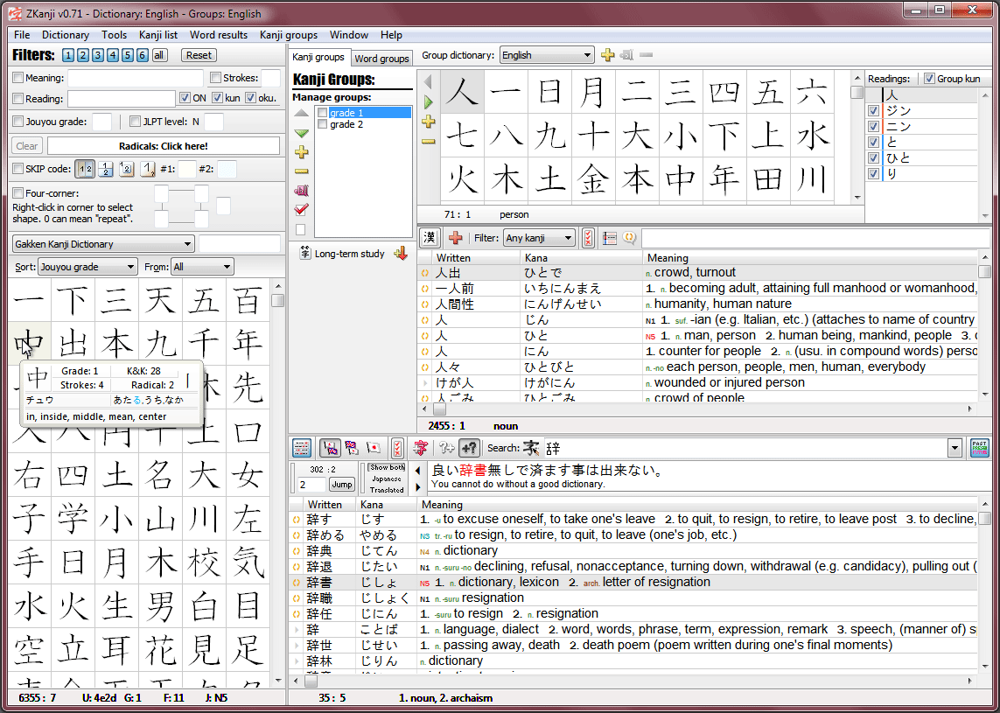
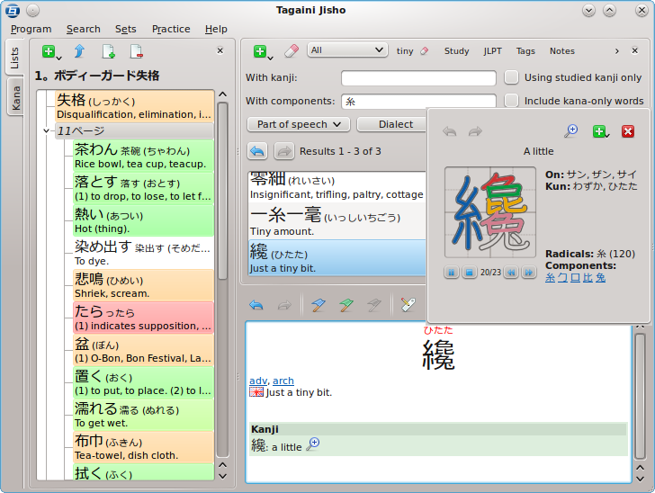
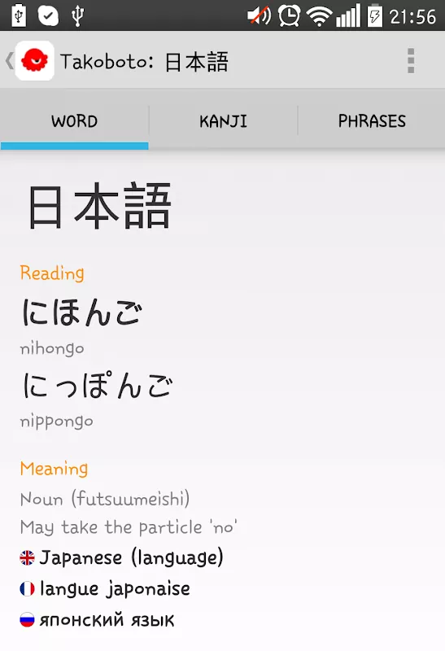
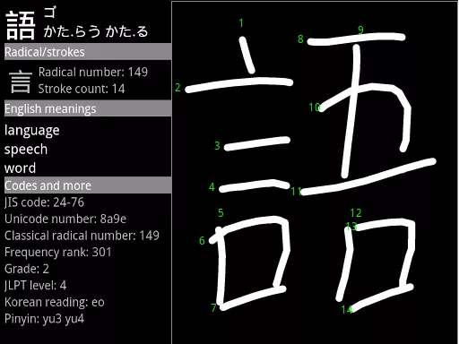

Windows

zKanji is a free and open-source study tool and dictionary of the Japanese language. It has several useful features for beginners and advanced students alike. Dictionary, example sentences, kanji search and information with animated stroke order diagrams, vocabulary list printing, study functions and much more
Windows Linux Mac

Tagaini Jisho is a free, open-source Japanese dictionary and kanji lookup tool for Windows, MacOS X and Linux and aims at becoming your Japanese study assistant. It allows you to quickly search for entries and mark those that you wish to study, along with tags and personal notes. It also let you train entries you are studying and follows your progression in remembering them. Finally, it makes it easy to review entries you did not remember by listing them on screen or printing them on a small booklet
Windows Android Web

Takoboto is a Japanese/English dictionary and Japanese language learning tool. It searches words written in Japanese or English using kanji, kana, romaji or latin alphabets. Example sentences and kanji information are provided for each word.
Android

Kanji Recognizer is a Japanese handwriting recognition, kanji dictionary and writing quiz for Android. Just draw a character, tap 'Recognize' and select a candidate to display reading, meaning, radical and more. No need to search by radicals or count strokes.
Terms Privacy